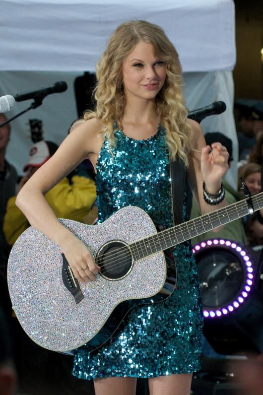

| Canciones | Duración |
|---|---|
| Tim McGraw | 3:52 minutos |
| Picture to Burn | 2:53 minutos |
| Teardrops On My Guitar | 3:23 minutos |
| A Place in this World | 3:19 minutos |
| Cold As You | 3:59 minutos |
| The Outside | 3:27 minutos |
| Tied Together with a Smile | 4:08 minutos |
| Stay Beautiful | 3:56 minutos |
| Should've Said No | 4:02 minutos |
| Mary's Song | 3:33 minutos |
| Our Song | 3:21 minutos |
| I'm Only Me When I'm With You | 3:33 minutos |
| Invisible | 3:23 minutos |
| A Perfectly Good Heart | 3:40 minutos |
| Teardrops on My Guitar (Pop Version) | 2:59 minutos |
Su primer álbum llamado Taylor Swift fue lanzado en el año 2006 por la discográfica Big Machine Records. Los géneros de este álbum van desde Pop a County. Las canciones de su primer álbum cuentan la perspectiva de una Taylor adolescente, mostrando las vivencias de la secundaria, cómo todo había cambiado para ella, dejó de sentirse extraña y logró formar amistades con sus compañeros.
